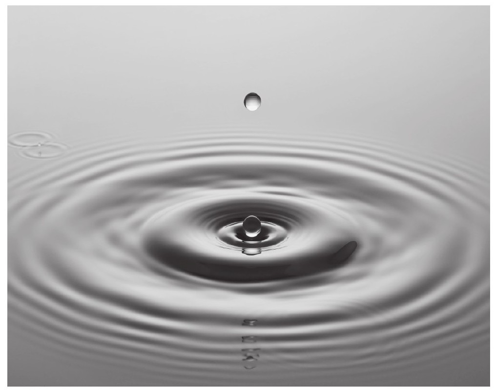
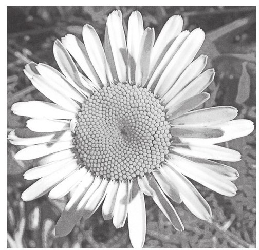
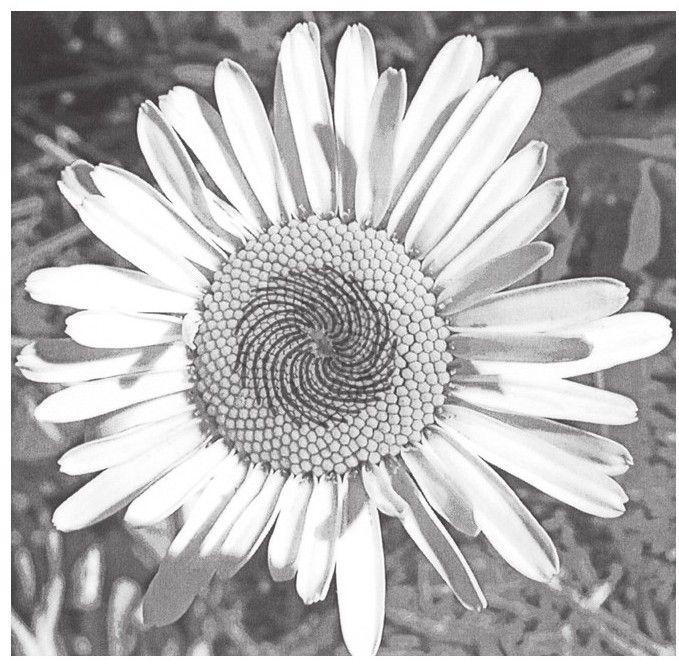
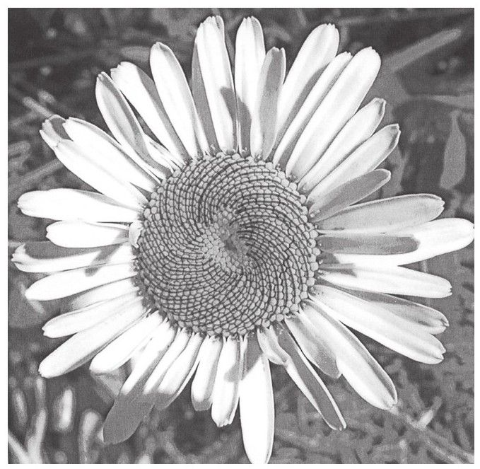
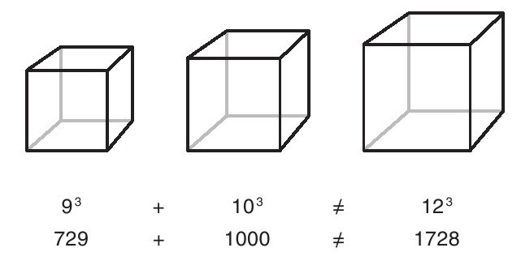

“什么是数学？”在我开展诸多有关教育的调查研究中，我每次都会询问那些接受过传统教育的学生这个问题。他们的回答多半是：“数字运算”或是“一堆定理”。而当我把这个问题抛给数学家时，他们多半会回答：数学是一种“研究方法”或者一套“思想体系”。学生们在谈到其他学科时，比如英语课和科技课，他们所理解的学科核心内容与常年从事该领域研究的专业人士所持观点基本一致。那么为何学生与数学家对数学这门学科的认知反差如此之大呢？学生们又是如何形成了如此偏离于数学学科本质的认知呢？
著名的哲学家和数学家Reuben Hersh曾写过一本名为《数学是什么，真的是这样吗？》的著作。在这本书中他探寻了数学的真正核心，并得到了一个重要观点：人们之所以不喜欢数学，很大程度上是由于课堂教学对于数学本来面目的歪曲。数百万美国人在学校学习数学时使用的都是极其缺乏学科内涵的数学教材，这使得人们在课堂对于数学的认识，与生活及工作中所接触的数学大相径庭，与数学家们所追求的数学比较的话更是相去甚远[书籍免费分享微信jnztxy]。
数学可以定义为“描述人类活动、刻画社会现象、解释现实世界并勾勒出未来发展趋势的一种量化方法”，是我们人类文明重要的一部分。在著名作家Dan Brown的畅销小说《达·芬奇密码》[1]中，作者谈到了关于“黄金分割率”方面的知识，这一比率通常用希腊字母φ表示。“黄金分割”最早记录于公元前6世纪，1202年又因为数学家斐波那契的传播而闻名于世。关于“黄金分割”，斐波那契曾提及一道有趣的数学题，具体是这样的：
将每个月计算得出的结果依顺序排列，就得到了我们所熟知的斐波那契数列：
1，1，2，3，5，8，13，21，34……
随着数列的逐级递推，我们会发现数列的第n+1项与第n项的比值（n=1，2……）与1.618这一数值越来越接近，而这一数值恰好等于“黄金分割率”。
最让我们感到惊讶的是，这一比值广泛存在于自然界的万物生长规律之中：比如鲜花的种子以其特定的螺旋方式排列，生长比值接近1.618。贝壳、松果还有凤梨等植物外壳纹路的排列方式也具有类似的特征。
下面以图片来举例来说明：如果你仔细观察图片中的雏菊，就会发现雏菊的种子以花盘中央为圆心呈螺旋状排列，只是不过每一层种子排列的旋转方向或左或右。

如果你仔细沿着图中雏菊种子的排列轨迹描绘出曲线，你就会发现靠近花盘圆心的里层可以画出21条逆时针旋转的曲线，而远离圆心的外层可以画出34条顺时针旋转的曲线。这些数字恰好是斐波那契数列中的某一项。

21条逆时针曲线

34条顺时针曲线
更为有趣的是，通过测量人体的某些身体结构也可以发现类似的“黄金分割率”。比如：人类身高与肚脐至地面距离的比值；肩膀到指尖距离与手肘到指尖距离的比值等。因为满足“黄金分割率”的图形或物体可以让眼睛感到舒适，因此这一比例普遍存在于许多艺术作品和建筑物中，甚至联合国的大楼、雅典的帕特农神殿、埃及的金字塔都应用到了类似的比例特征。
应该说那些有机会去见识数学“本来面目”的孩子是非常幸运的，因为这有助于他们的未来发展。负责《纽约时报》科学版面记者的Margaret Wertheim回忆起自己童年时曾有幸跟着一位来自澳大利亚的老师在课堂上学习数学，她认为正是这位老师的数学课转变了自己的世界观：
在经历过美国的数学课堂教育后，有多少学生能够像Wertheim那样来刻画属于自己心中的数学呢？为什么学生们并没有像Wertheim那样，被数学的奇妙所震撼并陶醉于其中，怀着一颗求索之心去寻找数学与现实世界的关联呢？这恰恰是因为他们被课堂上所建立起的数学假象误导了，因而没能亲身体验真正的数学到底是个什么样子。
出版过多部数学专著的数学家Keith Devlin指出，数学家其实并不精于计算，事实上他们的工作重心并不在于此。数学家会把数学作为一种“研究客观世界的一种方法”[3][4]。
在他的早期著作《数学基因》中，Devlin曾回忆到，他在小学时极其厌恶数学，后来在高中他阅读了数学大师W.W.Sawyer的著作《数学的前奏》，并被书中展现的思想深深吸引，从那时候起他便立志成为一名数学家。Devlin对数学态度的转变还源自Sawyer在其著作中的一段话：
对于Devlin来说，能够阅读Sawyer的著作真可谓是人生的一大幸事。但是洞察数学的本质可不是在目前学校课堂上这种教育模式下就能实现的，当然更不能仅仅依靠数学家们在研究中的偶然发现来获得。我认为，学校课堂有责任让学生了解数学的本质，这对于遏制美国目前数学课普遍存在的学生成绩差以及课堂参与程度低的现象而言，是一次至关重要的尝试。学生们知道那些文学课或者科技课到底在讲什么，这主要是因为他们知道了这些课程的内涵真实性所在，那么为什么数学会遭遇如此不同的境遇呢？[6]
我们所熟知的“费马大定理”（亦称“费马最后的定理”），是由法国数学家费马于15世纪30年代提出的。无数的数学家耗费了几个世纪来验证这一理论的真伪，使这一定理成了“世界上最棘手的数学问题”之一。[7]费马以其在解析几何和数论方面所做的卓越贡献而闻名于世。费马认为，当方程an+bn=cn的幂指数n大于2时，方程中的参数a,b，c没有整数解。比如：不存在3个整数使等式a3+b3=c3恒成立。费马的这一定理是从著名的毕达哥拉斯定理：a2+b2=c2衍生而来的。我们在学校学习毕达哥拉斯定理时一般会经过如下步骤：首先要学习一般三角形的性质，接着再引入直角三角形的性质，最后引出直角三角形两条直角边的平方和（a2+b2）等于斜边平方和（c2）这一论断（实质上就是引入了毕达哥拉斯定理）。
例如，当一个直角三角形的两条直角边长度分别为3和4时，那么斜边长度一定是5，因为32+42=52。显然这三个数字满足毕达哥拉斯定理的条件，据此我们同样可以经由任意两个完全平方数（如9，16，25）求出另外一个完全平方数。
费马因毕达哥拉斯定理而获得启发，进而研究了完全平方数的性质，并猜想能否通过任意两个完全立方数就可求出另外一个完全立方数。但是费马很快发现用这种方法求出的数不是太大就是太小，而且根本就不是完全立方数。我们举个具体实例：
以9为边长的立方体体积与以10为边长的立方体体积之和结果近似于以12为边长的立方体体积，但前者与后者并非完全等同（两者相差1）。

由此，费马大胆做出断言：即使穷尽所有整数集合都不可能找出一组整数满足这样的条件：a3+b3=c3或a4+b4=c4……
也就是说，当幂次项n＞2时，上述方程不存在整数解。这可以看作对整数数域性质的大胆推断。即使这一结论已经被数以万计的例子加以验证，但是仅靠枚举法是无法穷尽所有数字的。
我们知道，一旦数学猜想得到证明而成为数学定理后，肯定是经得起时间考验的，亘古不变。定理证明通常是在已经得证的公理性结论的基础上，经过一系列可靠逻辑论证后进一步得到的结果，一经证实，便会成为新的公理流传下来。费马的这项推断是在15世纪30年代产生的，但他并未给出详细证明。而恰恰是这一证明困扰了无数的数学家近350年之久。有趣的是，费马虽然没有对该结论予以证明，但他在自己手稿的空白处写到，他已经知道了关于该结论的一个美妙证明，只是限于笔记上已经没有足够空间可以写出来。这不禁又引发了人们的无限遐想。费马在手稿中未提及的这个证明方法困扰了数学家们几个世纪之久依然悬而未决。“费马大定理”也因此被评为“世纪数学难题”之一。[8]
尽管“费马大定理”被许多数学先驱关注，但是在350多年的时间长河里，这一问题始终未得到圆满解决。出乎意料的是，它最终却被一位质朴而又略显羞涩的英国数学家成功地证明了。当然，有关这位数学家的个人事迹我们可以从传记作品、新闻纪实甚至是传说中去了解，但是他在证明这一数学定理的过程中展现出的精妙之处却不为人知。如果有人（不管是大人还是小孩）被数学家们坚持不懈的工作精神打动，被这样一道十分有趣的“谜题”吸引，想亲自去尝试探索一番的话，那么我推荐Simon Singh的著作——《费马大定理》。这本书中详尽介绍了“费马大定理”在被证明过程中展现的数学生动之美，Singh因此也将数学家们所从事的工作称为“推进人类思想不断迈进的伟大革命”。[9]
在此之前，人们普遍认为目前缺少足够新颖的数学工具来解决“费马大定理”，以致将它视为无法解决的问题。许多国家为此设立丰厚的奖金以鼓励人们向这一世界性难题发起挑战，于是一批又一批的有识之士将自己的毕生精力投入其中，可惜的是，从结果来看并未取得实质性进展。Andrew Wiles，这位数学家的名字足以名垂青史，因为是他将“费马大定理”完美地解决。
Wiles初识“费马大定理”还是在他10岁的时候，当时是在家乡剑桥当地一所学校的图书馆里，他如此来形容自己与“费马大定理”初次相遇的情形：“这个问题看起来似乎挺简单的，很多伟大的数学家却拿它没有办法。虽然我那时还只是10岁的小孩子，但是我知道自从和它相遇那一刻起，我就下定了决心，一定要去证明这一定理。”[10]多年之后，Wiles在剑桥大学取得了数学博士学位后，又被普林斯顿大学聘为数学系的一名讲师。随着工作的深入，他不禁意识到必须将自己的全部精力都投入到儿时就确立的目标中，才有可能看到希望。所以为了证明“费马大定理”，Wiles暂停了手头上的一切工作，开始阅读大量相关领域的文献，并收集整理新颖的数学思想。
他知道要进行证明，必须有新的数学分析工具出现，因此他将焦点集中在与“费马大定理”相关的各种数学分支研究领域，试图寻找解开关键环节的突破口。Wiles曾花费了几年时间，用不同方法去尝试证明，以寻求解决问题的最优路径。终于在某一天午后，经过反复验证，Wiles兴奋地告诉他的妻子，自己已经完美地验证了“费马大定理”。
在1993年，Wiles在英国剑桥大学牛顿学院举办的数学研讨会上，公布了他对“费马大定理”的证明结果，这一困扰人们350年之久的数学难题终于圆满落幕。很多人此前都对Wiles的工作产生浓厚兴趣，而且有关他将于本次研讨会公布他对“费马大定理”证明的消息早已不胫而走。当Wiles到达会场时，会议室里早已坐满了200多名数学家，有许多人都带着照相机准备记录这一激动人心的时刻，而那些没能挤进会议室的人只能透过会议室的玻璃窗来见证这个奇迹时刻。
Wiles大约用了3节课的时间来讲解他的计算过程，当最终敲定结论时，全场报以热烈的欢呼声。据Singh回忆，那时各国媒体犹如潮水般涌入会场，整个会场气氛又推向了新的高潮。人们感到难以置信，难道这个颇具历史性的数学难题真的就这样被解决了吗？
数论学家与代数几何学家Barry Mazur在回忆当时的情景时谈道：“这是我有生以来听到的最精彩的一次演讲，在他讲解证明的过程中你能够感受到思维的跳跃，收获最新的思想方法。我怀着紧张激动的心情赞叹这项证明工程是如此的伟大，可以说此次的讲演为‘费马大定理’的最终解决画上了浓墨重彩的一笔。”
也许每位亲眼见证这一伟大时刻的人都会认为“费马大定理”至此告一段落，但不凑巧的是，在Wiles的证明中还存有一些错误，因此他不得不重新对他的证明过程进行调整。在1994年9月，历经几个月的修改工作后，Wiles终于确认了证明结论的完整性与准确性。其实在证明过程中使用的许多理论在此之前并未在逻辑上显现出关联性，Wiles通过自身的努力和研究将这些理论恰当地联结在一起，从而开创了数学领域一套全新的方法理论体系。
我们不应忘记的是，来自伯克利分校的数学家Ken Ribet同样对“费马大定理”的最终证明做出了卓越贡献：他通过将两个看似毫不相关的数学分支（这里指的是椭圆方程与数论）体系建立联系，从而拓宽了数学领域的研究视野。
关于这场令人难忘的证明讲演，更深入的细节可以在Singh以及其他人的著作中找到具体描写。现在让我们把目光拉回来，那么这样一个故事又对孩子们的教育有什么样的启发呢？数学家与学生所接触的数学差异在于：数学家花费很长时间投身于复杂的数学问题，这些问题通常涉及多个领域的数学知识。这与学生在课堂上花费好几个小时听老师讲解单一模式解题方法的情况有着较大差别。其实如果学生有能力应对冗长且复杂的数学问题，那么这将会对他们很有帮助：这种能力能够让年轻人在面对未来工作和生活中的困难时坚持不懈，不轻言放弃。在对许多数学家的采访中，他们都一致表示非常热衷于去处理那些困难棘手的问题。
罗格斯大学的Diane Maclagan教授就曾被问道：“作为一名数学家，你觉得在工作中哪个环节是最困难的？”
她不假思索地回答道：“证明定理这一环节最难。”
“那么哪个环节是最有趣的？”记者接着问道。
“还是证明定理。”她回答道。[11]
在我们看来，尝试去对付那些纷繁复杂的数学问题看起来并不是那么有趣，但是数学家们却在通过自身努力不断提高解答成功率的过程中寻找到了快乐。如果孩子们在解题过程中反复受挫的话，那么他们很难会喜欢上数学。事实上，目前大部分学校的数学课程都会让学生们产生这种挫败感。数学家能够取得成功是因为他们身上具有“持续自主学习”这种特质。他们会以研究问题为导向有针对性地学习相关方面的知识。
就像是工程师以及类似职业一样，数学家的工作内容也有侧重点：那就是定理证明。定理源于猜想的产生。作为数学家与哲学家，Imre Lakatos将从事数学研究工作形容为：基于数字与图形相互关系基础上的，经由人类主观能动意识加工后所产生的一系列逻辑推理[12]。那些只接受过传统数学课堂教育的人，了解到数学家们在猜想证明过程中展现的惊人技艺时，他们所露出的惊讶表情让我开始怀疑，这些人儿时在课堂上是不是从未被鼓励去大胆尝试过类似证明这样的事情。
英国政府有关部门曾经开展过一项专项调查，调查内容是寻找工作中那些常用的数学知识，调查结果表明，数学中的估值技术在社会中应用最为广泛[13]。当你试图让那些习惯于传统教育的孩子去学习估算方法时，他们通常会感到手足无措。他们会下意识地去主动寻求精确值，然后再将计算结果四舍五入，使其看起来像是“估值”得到的结果。其实这种情况之所以出现，是因为没有培养孩子们对于数字的“良好感觉”，而这种直观的数字感觉通常会使估算比精确计算更为高效。但是孩子们已经对错误的教育模式先入为主了，这种模式给他们灌输的思想是：只要是数学计算得出的结果，就应该是精确的，不可能含有任何的估计成分。但事实上，猜想和估计是数学领域所应用的两类重要核心方法。
在数学家们针对某一客观现象提出猜想后，之后的工作都免不了经历一次次曲折反复的推导过程。有时需要寻找是否存在反例，来验证最初的猜想与后续的逻辑论证是否有矛盾之处，以便于后续进一步论证。可以说数学家们的工作性质是具有探索性和创造性的，这与艺术和音乐等领域在某些方面具有共通性。英国数学家Robin Wilson就曾说过：“数学和音乐都属于‘艺术类’范畴，当你在草稿纸上面演算数学公式时，就像是在乐谱上谱写美妙乐章一样。”[14]Devlin也对此表示赞同：“数学不仅仅是以数字作为它的代言对象而已，其实数学包罗万象，孕育在我们的生活当中，以其独特的语言诠释着我们这个世界运行的客观规律。数学其实是一种思想，它并非无趣且形而上学，相反，数学无处不彰显着创造性的灵动思维。”[15]
正如匈牙利杰出数学家George Pólya所指出的：
数学家的工作所展现的另一个显著特征是合作性。人们往往会认为数学家的工作是各自为政的，但事实并非如此。来自英国的数学教育学教授Leone Burton对70名数学家的工作方式展开调查后发现：数学家的工作模式完全颠覆了人们印象中的单打独斗模式。他们往往通过相互交流来启发灵感。Burton发现在数学家所完成的学术论文中，有超过半数的论文都是通过与他人合作完成的。这种合作模式可以产生很多让人意想不到的效果：比如学习并汲取他人研究中的优秀成果、提升数学思维的质量层次、一起分享解题的快乐心情等等。正如Burton所说：“数学家们一致认为合作研究会带来大量的收获，他们认为这种合作交流的模式应该推广到数学课堂教学当中。”[17]但是目前的美国数学的课堂教学依然采用的是那种传统教学模式。
我们能够从数学家所从事的工作中发现的另一个重点是：恰恰是在客观情况下不断涌现新问题，才造就了数学这种鲜活的生命力。相信观看过《美丽心灵》这部电影的朋友们都会对其中的男主人公——John Nash印象深刻。这位数学家由于其传奇的人生经历而获得了大众的广泛关注，并且人们对于他的工作也颇有兴趣。人们总是将数学家看作“疑难问题的终结者”[18]，但是代数拓扑学家Peter Hilton却认为，每个数学问题从产生到最后解答都离不开大量的演算。而数学生命的延续正是在这一次次从设问到解答，再由解答到设问的循环往复中体现出来的，并非是问题的终结。从事数学研究工作需要新颖的方法、原创的思维以及乍现的灵感。目前架构起数学体系的所有方法和理论都源自对各种类别问题的猜想，并在此基础上通过有关方法一步步发展起来进而迈向成熟。但是学生显然对这一事实并不了解，他们只是去单纯地学习所谓的“解题方法”，往往是在学生对于某一问题还没有足够清楚认识的情况下，就被老师强迫性地要求把解题步骤死记硬背下来，正如Reuben Hersh所说：
对于课堂教育而言，我们一定要给学生展示数学最为鲜活的一面。如果学生能够有机会在课堂上提出自己的疑问，并且自主延伸出新问题，他们也就能体会出数学是“连续的、有生命的”，而并非是“模式化、程式化”的零散规则而已。如果老师能够有意识地去引导学生发现并探索新问题以激发他们学习兴趣的话，就会使他们更加热爱学习数学，通过解决实际问题而获得成就感，并且使自身的数学水平进一步提升。
在英国学校的数学课堂上，学生们一般都会被鼓励去研究那种具有实际意义的延展性问题，这种从一个问题过渡到另一个问题的学习方式能够最大限度地激发学生的探索学习兴趣。比如说可以让学生去试图设计各式各样的建筑物，诸如此类的趣味题其实隐含着许多高等数学方面的知识。假设让学生们去考虑某个消防队滑竿的最佳设计方案问题，老师们会将学生的作答统一发送至学校的考试委员会，并将此次得分作为学生期末考试成绩的一部分。当我询问英国学生们对于这种作业形式的看法和感想时，他们表示通过自己亲自上手来解答这些问题不仅能在这个过程中心情愉快地收获很多知识，而且还能对自己的工作成果产生无限的自豪感与成就感，而这往往是传统的数学作业练习根本达不到的效果。
数学家之所以能在工作中攻克一个又一个的难关，一个重要方面是他们能够将问题在各种各样的数学表达方式间灵活转换，这些数学表达方式包括符号、语言、图形、表格、图表等。恰当的表达形式更有助于将问题引向最佳的“解决路径”上面。随着学科的不断发展，精确度逐渐成为数学领域的重要因素，不过这是个使人喜忧参半的现实。对于一部分学生来说，他们能够做到在数学的框架范围内，以自己特有的灵活方式进行数学运算和语言表达；而对于另外一部分学生来讲，由于课堂上的那种教条方法已经根深蒂固，他们潜意识已经认定数学中的所有数值表达全都是“精确的”，从而失去了自主变通的能力。我们根本就没理由相信，数学中所要求的精准度训练要和那种一遍又一遍教条式的习题训练联系在一起。
虽然数学中对于表达形式和符号使用的精准度有着严格要求，但这并不意味着，为满足这一要求，就将开放性及探索性的学习精神排除在数学世界之外了。恰恰相反的是，数学家正是由于精准地使用了语言、符号、图表等多种数学表达工具来沟通交流，才使得他们有机会去寻找突破问题的那些关键灵感。不过数学家使用符号的方式并不等同于诗人或者艺术家那种使用语言文字符号的方式，他们会通过观察描述问题时所发现的符号排列差异而去寻找其背后的内在逻辑关系，正如Devlin所说：
我们可以将数学比喻为一种技巧生动的“演奏方法”，以其独有的方式来“描绘”世间万物。想象一下，在音乐课上，学生们花费了数个小时的时间来识谱，并在每一张乐谱上面做详细笔记，老师会检查学生的笔记并做出批改，但从来不让他们试着把乐谱上面的音符演奏出来，那么这堂音乐课将很难继续讲下去，因为学生们根本就没有机会去亲身体验音乐本身所传递的内容。目前数学课堂的讲课模式基本就是这样的，而且丝毫没有转变的迹象。
想要真正地去理解数学，就需要把“静态的”数学用“动态的”方式“演奏”出来。而那些真正理解数学的人懂得如何以精准且巧妙的方式去运用各式各样的数学符号。学生不应该去被动地死记硬背那些所谓“程式化”的方法，而是应该去主动地思考，以自己特有的方式积极行动起来去寻求问题的答案。如果学生不能以这种方式来学习数学的话，那么他们势必会在以后的学习中碰到更多的困难，当然考试就是其中的一项困难。
学校的数学教育对于“思考”一词存在着某种误解：那就是不惜让学生耗费几年的时间，来反复练习同一种解题模式，直至他们对此形成条件反射为止。许多数学家真正担心的是，学生到了毕业考试的时候，将会面对那种与平日所做练习完全不同的、“真正切实的”数学问题，而这需要他们能够灵活地、有创造性地运用自己所掌握的一系列方法去着手解答。我们不能一直眼睁睁地看着学生在这种沿用多年的“反复做题、备受折磨”的教学方式中煎熬，不能放弃让他们接受本应更为有效的教学方法。假如学生能够花费一定的教学时间，以数学家的工作模式来学习并体验数学的话，也就是在前文已经介绍过的：先是根据客观事实提出问题，接着做出猜想和推测，然后提炼观点并寻求解题路径，最终与他人分享自己见解这样的一个过程。如此一来学生不仅会切身体会到真正的数学工作如何开展（这是行使自己学习权利的真正目的所在）[21]，而且还能有机会体验到数学给予他们的真正快乐，同时又能以一种更为高效的方式来掌握有关知识，真可谓是一举三得。[22][23][24]